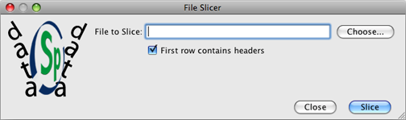

Specify File Slicer |
There are times that users may wish to upload MS Excel files that contain more than the 2000 records, which is the record limit for the Specify Uploader. For user convenience, the Specify project has created an application, the Specify File Slicer, that will split files that contain more than 2000 records into files that contain only 2000 records.
The Specify File Slicer application is located in the bin directory within the Specify application directory, which stores the executable files for Specify. Double click Specify File Slicer to launch the tool. Users are required to login using their Specify Username and Password.

File Slicer
File to Slice; click the Choose button and find the desired file using the file directory.
First row contains headers; check this box if the first row of the file contains headers. Specify will then copy the headers to each 2000 record file. If the files include headers they will contain 2001 records, but Specify does not count header files when uploading.
Simply click the Slice button to start the File Slicer. The new files use the original file name but add an underscore and consecutive number for each file. The original file remains intact. For example: A file named "Birds.xls" containing 34002 rows will be split into 17 files containing 2000 rows and 1 file containing 2 rows. The files will be named "Birds_1.xls" thru "Birds_18.xls".
NOTE: When headers are not used in the MS Excel files each file will need to be remapped in the template editor inside the WorkBench. If headers are present then only the first file will need to be mapped and subsequent files are given the option of using the existing mapping.